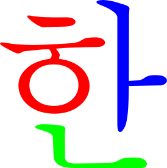
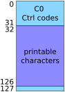
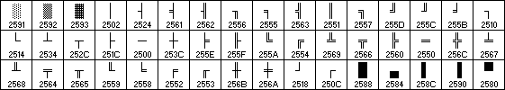
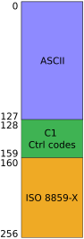
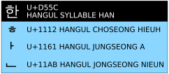

On computers where 1 and 0 rule supreme we must have a way to express the human languages in the written format. Do do this there are standards that map characters to numeric values.
Not all human languages use the same set of characters. Although some, like the European languages, can have varying degrees of character overlap others don't. An example of the latter is the Korean "Hangul" and the Japanese "Katakana" writing systems.
Even when talking about just 1 language with 1 character set, there can be a number of current competing standards. In addition, older 'legacy' standards might need to be considered when dealing with backwards compatibility.
Obligatory XCDC comic strip
With that in mind, let's explore the rabbit hole...
Definitions
Before jumping into encoding some domain specific vocabulary needs to be defined so that things make a little more sense.
Character Set
An unordered collection of characters. E.g.: the characters used in western european languages.
Character Repertoire
When talking in generic terms it is used interchangeably with "Character Set". In the Unicode domain, it means a full set of abstract characters that a system supports. A repertoire can either be:
open: new characters may be added to it (e.g.: Unicode), or
closed: the standard is set and cannot be further modified (e.g.: ASCII).
Glyph

A glyph is a visual representation of a single or group of characters. Its genesis can often depend on adjacent characters. E.g.: the Korean syllabic block 'han' is made up of 3 distinct characters (see right).
Coded Character Set
CCS, also known as a "Code Page", maps the characters in a character set to code points. In Unix/Linux the term "Charmap" is more often used instead.
Code Point
A code point is a unique unsigned integer value that represents the position (or 'index') of a character within a coded character set. It is usually expressed in Hexadecimal notation. E.g.: In US-ASCII where there are 127 code points, the code point of the letter 'm' is 6D.
Code Unit
Unit of a coded character in the coded character set. E.g.: In US-ASCII, the code unit is 7 bits.
Character Encoding Form
CEF defines how many code units there are for each code points and how the one maps to the other. There are 2 types of encoding forms:
Fixed width - uniformed length for all encoded characters (e.g.: US-ASCII - 1 × 7 bits),
Variable width - encoded characters can vary in length (e.g.: UTF-8 - 1 to 4 × 8 bits).
Character Encoding Scheme
CES is a reversible transformation of sequences of code units to sequences of bytes. It helps when saving/transmitting to octet-based file systems or networks where bytes may not be the same size. E.g.: transforming a 12 × 16 bits UTF-16 sequence into a set of wide characters (wchar_t type) that are defined as 32 bit long integers on the system.
Code Space
A range of code points in a coded character set. It creates sub-sections within the set and is useful when different encoding forms are used for different sub-sections. E.g.: see UTF-8.
Encoding Standards
There exists a plethora of standards so I'll cover just a small selection of important ones to highlight some of the idiosyncrasies one can expect to encounter when dealing with this subject.
ASCII

ASCII code point structure
ASCII (or American Standard Code for Information Interchange) encode 127 characters into fixed-width 7 bits unsigned integers. Why 7 bits? 1960s-era systems that ASCII was designed for used 7-bit bytes. From the 1970s things changed and systems where designed with bytes that were now 8-bits long instead.
Characters 0-31 and 127 are known as "control characters". These are non-printing and their purpose is to send instructions to devices such as printers. Although most are now obsolete some are still in use such as the carriage return (CR) and line feed (LF). These are typically referred to as "C0" control codes.
Characters 32-126 are printable characters just sufficient enough to represent the English language in text format.
ASCII table
The extra bit gained in the 1970s was originally either set to '0' or used as a parity bit for basic error checking in network transmissions (a.k.a.: "check bit"). Later it was used to extend the ASCII table with another 128 characters bringing the total to 256. The extra space was mainly used to add basic graphic elements (e.g.: see below) to text outputs and/or add characters from other languages.
Graphic elements from the D.O.S. code page (176-223) (OEM 437)
It bears mention that, at the time, these extensions were vendor specific and not part of any standards. This led to interesting outputs when viewing files written on a computer that had a different code page... Fun times.
ISO/IEC 8859

ISO-8859 code point structure
This standard was a joint effort from the ISO (International Organization for Standardization) and the IEC (International Electrotechnical Commission). It was made with the goal of having reliable information exchange. Since the focus was on making text readable on other machines, it meant that typography (defining character placement and the text's visual attractiveness) took a back seat.
The standard defines fixed length encoding (8 bits) for characters taking the first 127 (00000000 to 01111111) in the encoding space directly from ASCII to ensure backwards compatibility with the old standard. The code points 128 to 159 have been assigned as "C1" control codes.
The standard has 16 parts (minus one abandoned), each for covering languages groups that share similar characteristics (e.g.: 8859-1 for latin western european, 8859-2 for latin central european, ..., 8859-6 for latin/arabic, etc...). These parts utilise the remaining slots (160 to 256) in the encoding to express their individual language groups.
ISO/IEC 2022
ISO/IEC 2022 was designed for data exchange and mixing different languages in documents. The way it does this is by announcing the language and, by extension, the encoding via escape sequences so that switching could occur. This technique allows multiple character sets to be represented within the space of a single character encoding system.
Because of this the processing is on the complicated side of things, especially with any implementation that covers all the standard's specifications (i.e.: the different encodings). It was an answer to having multiple encodings with limited resources.
That's the general idea without going too much into details. As Unicode supports the languages covered by ISO/IEC 2022 and is now more commonly used[1] along with generating less headaches, I am going to cut this section short...
[1]Emails is an area where ISO/IEC 2022 is still in use but adoption to Unicode's UTF-8 is becoming more common in that area as well.
Unicode & ISO/IEC 10646
The standards were born out of the Unicode Consortium and the ISO-10646 group deciding to make a standard that would aggregate all characters from every human languages used past and present. Think of it as the mother of all coded character sets. The idea was to have just 1 universal coded character set so all systems could see the exact same characters as each other and efficiently have any number of languages used together in documents without having to switch code pages mid-way like with ISO/IEC 2022.
ISO/IEC 10646 is code-for-code the same as the Unicode standard and they are both maintained concurrently. The 2 groups work together to stay in sync and when developing any extensions to the standards.
The Unicode standard, when compared with ISO/IEC 10646, has extra constraints on the implementation to ensure platform and application uniformity when dealing with characters. These constraints, which include things like algorithms, functional character specifications and data, and background material are detailed in the standard's literature.
Unicode code points are expressed in hexadecimal notation in the form of U+XXXX. The U+ prefix indicates that the number following it is a Unicode code point. It is followed by at least two hexadecimal numbers. For example: the character 'K' (75) in unicode is U+004B and the old Persian letter '𐎤' (66,468) is U+103A4.
The Unicode repertoire spanning U+0000 to U+10FFFF is divided into 17 "planes" which are, in turn, broken into named "blocks" of related characters.
Plane
Code space
Description
0
U+0000 to U+FFFF
Basic Multilingual Plane
1
U+10000 to U+1FFFF
Supplementary Multilingual Plane
2
U+20000 to U+2FFFF
Supplementary Ideographic Plane
3
U+30000 to U+3FFFF
Tertiary Ideographic Plane
4-13
U+40000 to U+DFFFF
unassigned
14
U+E0000 to U+EFFFF
Supplementary Special-purpose Plane
15-16
U+F0000 to U+10FFFF
Supplementary Private Use Area planes
For example, the Basic Multilingual Plane (BMP) contains blocks such as "Latin Extended-A", "Latin Extended-B", "Cyrillic", "Hebrew" and "Tibetan" to name a few.
Abstract characters in the Unicode character set are encoded by association to particular code points but it is important to be aware that not all characters are associated to a single Unicode code point. Some characters are represented with a sequence of these code points. These 'composite' or 'pre-composed' code points are there for the sake of efficiency and not having to encode all the individual parts and take up more space in memory as a consequence.

Unicode decomposition of the Korean glyph 'HAN'
E.g.: Taking our previous example of the Korean 'han' glyph (한) its unicode point is U+D55C but that is actually composed of 3 other individual code points (see fig).
For Unicode there are currently 2 different encoding methods:
The "Universal Coded Character Set" (UCS) that comprises of
UCS-2 (obsolete, now replaced by UTF-16), and
UCS-4 (functionally equivalent to UTF-32).
The "Unicode Transformation Format" (UTF) which includes
UTF-8,
UTF-16,
UTF-32.
The most commonly used encodings are UTF-8 and UTF-16.
UCS
The "Universal Coded Character Set" (ISO/IEC 10646) or "UCS" for short defines the fixed lengthcode points for the Unicode character repertoire.
Originally the Unicode consortium decided to have the repertoire hold all characters from all modern and in-use human languages of the world. The previous 8 bit fixed encoding was doubled to 16 bit allowing a whopping 65,536 characters for the task.
In 1996 the Unicode consortium decided that this wasn't enough and all characters from all human languages that have ever existed in the world needed to be included as well. The original 216code points was not even nearly enough for doing that in reality.
"UCS-4" (also referred to UTF-32) doubled UCS-2's fixed encoding to 32 bit (or 4 bytes) which made it now possible to hold the complete extensions of Unicode and some more. This solution is memory intensive and incredibly wasteful as everything in this encoding form is 32 bits long.
UTF
Unicode Transformation Format is a set of multi-byte encoding schemes that map to unicode code points and can represent more than 2 billion characters.
UTF-8
UTF-8 is a variable width encoding of UCS-2 or UCS-4 which offers two-way compatibility with ASCII (range 0 to 127). The encoded characters spans 1 to 4 × 8-bit bytes each and can represent the first 221 Unicode code points.
Code Space
Code Form binary sequence
U+0000 to U+007F
0xxxxxxx
U+0080 to U+07FF
110xxxxx 10xxxxxx
U+0800 to U+D7FF U+E000 to U+FFFF
1110xxxx 10xxxxxx 10xxxxxx
U+10000 to U+10FFFF
11110xxx 10xxxxxx 10xxxxxx 10xxxxxx
UTF-8 doesn't have code points beyond U+10FFFF as it is limited in RFC 3629 (sec.12) to have the same limit as UTF-16.
UTF-16
UTF-16 is the default encoding for the Unicode standard and, as it's name suggests, uses 16 bits code units. There can be up to 2 of these for any code points.
Code Space
Code Form
U+0000 to U+D7FF U+E000 to U+FFFF
1 × 16 bits
U+10000 to U+10FFFF
2 × 16 bits
Elements in the first ranges encoding to 1 × 16 bits all map to numerically equivalent code points in Unicode whereas the 2 × 16 bits range require some calculations to take place. These are called "surrogate pairs".
Converting Unicode code points beyond U+FFFF to UTF-16
UCP is a Unicode code point that is in the 0x10000 to 0x10FFFF range. UCP' = UCP − 0x10000
The resulting UCP' value is cut mid way to get 2 × 10 bits Hex value (UCP'high and UCP'low).
Whigh = 0xD800 + UCP'high Wlow = 0xDC00 + UCP'low
Example: converting the egyptian cat hieroglyph[2]𓃠 (U+130E0) to UTF-16...
All that's left is to concatenate the two results leaving us with the UTF-16 hex encoding of D8 0C DC E0
One thing to note is that the valid ranges for high surrogates (0xD800-0xDBFF), low surrogates (0xDC00-0xDFFF) and valid Basic Multilingual Plane characters (0x0000-0xD7FF, 0xE000-0xFFFF) do not overlap.
Windows (NT to 10), Java, .Net, Javascript and many Windows-based text editors all use UTF-16 internally whereas Linux and Mac OSX use UTF-8 now.
Equivalent to UCS-4, this is most straight forward encoding to deal with but at the cost of much higher memory usage. This fixed width encoding uses a single code unit that is 32 bits long.
Each of the values in UTF-32 corresponds to the equivalent Unicode code point's value. This has advantages in performance as jumping to a particular code point in a string can be done in O(1) time like an array since all code points are encoded the same size. In variable length encoding like UTF-8 and UTF-16, reaching a particular index can only be done by iterating through the string (O(N) time like a linked list).
Development note: in Linux a wchar_t wide character type is 32 bits long whereas in Windows it is 16 bits long.
Unicode Byte-Order Mark
A byte-order mark (or "BOM" for short) is a magic number at the beginning of a stream or string that tells the decoding application whether the encoding used to write the file used a Big-endian or Small-endian byte ordering.
Endianness is the order in which bytes in a word[a] are stored and read in computer memory or during transmission. E.g.: Assuming a 32-bit word architecture where 4 × 8 bit characters can be squeezed into a word, a string 'Hello!' (48 65 6C 6C6F 21) in a Big-Endian system will be 48 65 6C 6C6F 21 00 00 whilst on a Small-Endian system it will be 6C 6C 65 4800 00 21 6F.
[a]A word is the natural unit of data used in a particular processor design. Newer x86 architectures currently use 64 bit words for example.
UCS-2 and UTF-16 use this feature in their encoding with the BOM 'U+FEFF'.
As for UTF-8, the Unicode standard allows it but does not specify its requirement (RFC 3629, section 6). BOM in this context only serve to signal that the text stream is encoded as UTF-8. Microsoft's application (notepad, compiler, interpreters, etc...) require a BOM at the beginning of a file even when dealing with UTF-8.
UTF-32 only really requires a BOM when used (rare case) for transmission. In this case the same rules as UTF-16 are applicable.
Encoding
BOM
UTF-8
EF BB BF
UTF-16 (Big-Endian)
FE FF
UTF-16 (Small-Endian)
FF FE
UTF-32 (Big-Endian)
00 00 FE FF
UTF-32 (Small-Endian)
FF FE 00 00
A final comment
The topic of character encoding can be seen as both vast and perilous. It's all too easy to just ignore which is unfortunate as it is a rather important subject. In many instances the language or framework kinda insulate the developer from all the encoding stuff by doing background Voodoo and natively using UTF-8/16. Unless you come across a case where the incoming data stream or the system where the application is run does not use these exact encodings you can go on with development completely oblivious that a string may not always contain what you might expect.
There is so much more to this subject than what I covered here.
I have been guilty of overlooking this important topic in the past and it sort of came back to bite me in the arse by way of cornering me architecturally. As a certain famous software engineering blog post put it there are really no excuses in the end not to know at least some basics...


{kind=link}
{kind=link}
I have been guilty of overlooking this important topic in the past and it sort of came back to bite me in the arse by way of cornering me architecturally. As a certain famous software engineering blog post put it there are really no excuses in the end not to know at least some basics...